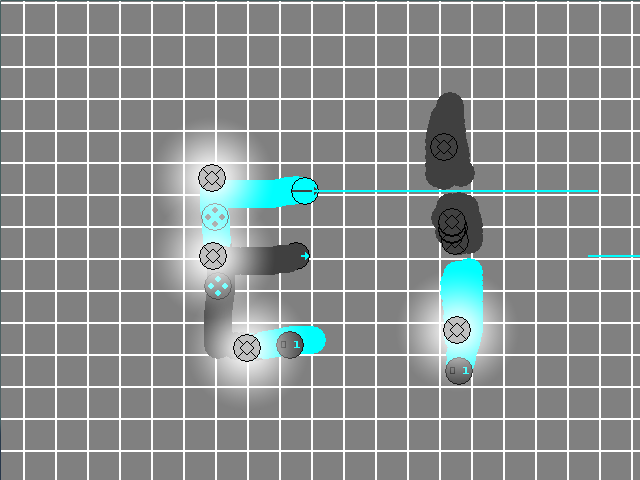

*BEGINNING NOTE* because some of my local game files for this project were corrupted, this project has been temporarily put aside. It is unfinished, unanimated, and buggy. This project is simply a project from my times of Gamemaker development when I was younger that I felt was good enough to resurrect just long enough to build and publish an alpha. Original Description: This game is a sort-of electricity simulator/physics game. There is no real goal, and the game has an open-ending build-and-tinker theme. There are various electric parts in the game, and the game its own physics system that differs slightly from normal electricity. As a general rule, blue means powered, and grey means unpowered. *NOTE* before playing the game, please read the readme. It contains a more detailed guide to the game as well as well some developer info.
An in-game screenshot of a simple Clocker machine.
I made this game using the full version of Gamemaker 8.1 (defunct; this software is now known as Gamemaker Studio). I drew all the pixel art myself using Gamemaker's in-house drawing software, which I find to be quite intuitive.